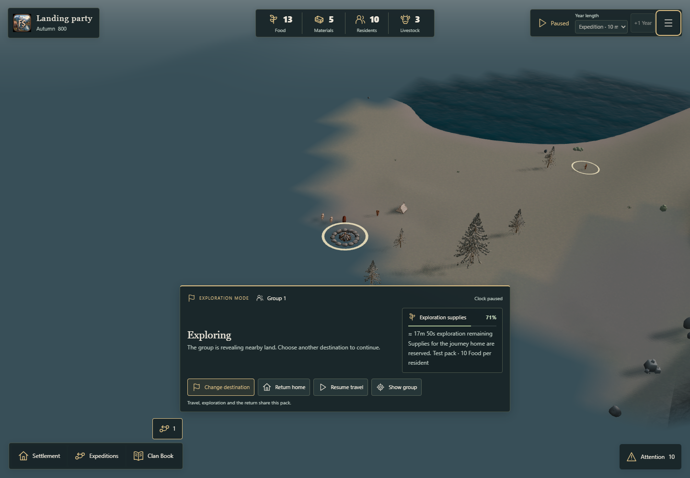

Actual expedition movement reaches the reserved rival site. Observed founding tents, people, livestock and the campfire use the existing models. Only currently visible actors are shown.
Validation and diagnosis · Browser results · Your settlement
The review opens in a separate tab.

New orders use eight directions, at the existing speed and without cutting blocked corners. Existing saved route geometry is retained.